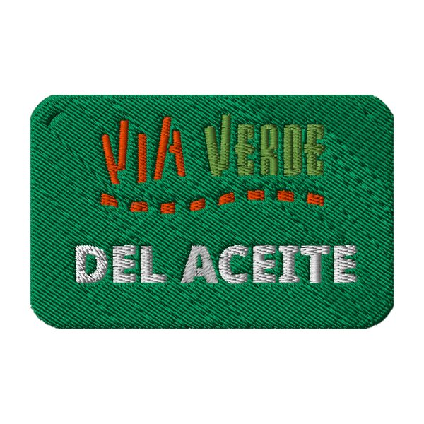

Vía Verde del Aceite
Rectángulo · 8,9 × 5,7 cm
La Vía Verde del Aceite recorre el antiguo trazado ferroviario entre Jaén y Córdoba, entre olivares y viaductos de hierro. Un recuerdo para quien la ha recorrido a pie o en bicicleta.
19,99 €Próximamente en Amazon